Gallery
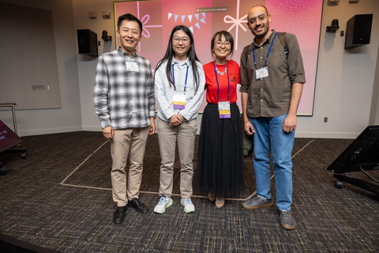
Some of FCCM 2026 Organizers - May 2026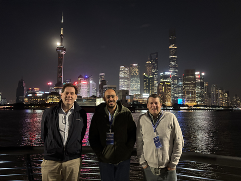
Walking by the Huangpu river in Shanghai with Vaughn and Jeff - Dec 2025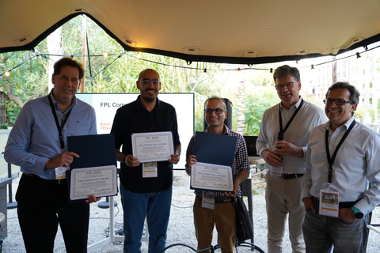
FPL Community Award - Sep 2025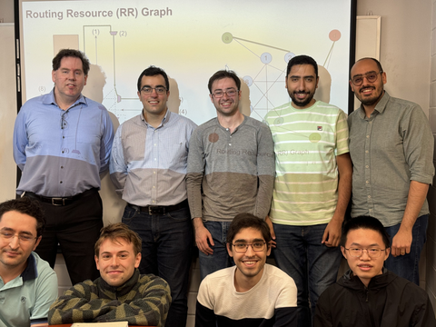
Amin's MASc defense presentation - Apr 2024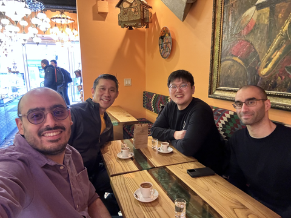
Enjoying Turkish delights with Mangoboost folks in Monterey, California - Mar 2024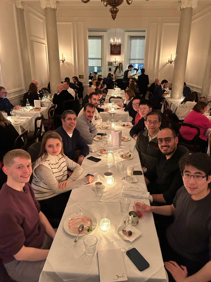
Dinner during visit to Imperial College London - Feb 2024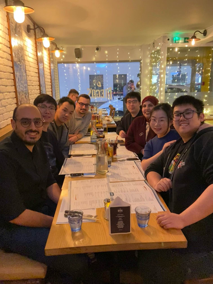
Dinner during visit to University of Southampton - Feb 2024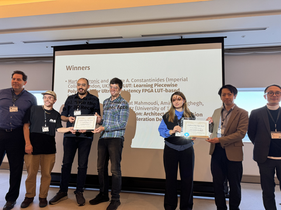
Best paper award at FPT - Dec 2023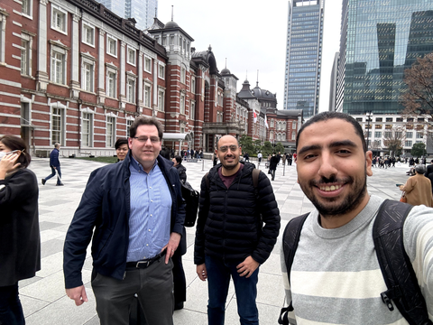
Exploring Tokyo with Vaughn and Mohamed - Dec 2023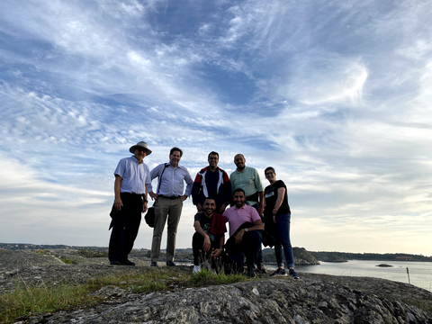
Hiking in Sweden - Sep 2023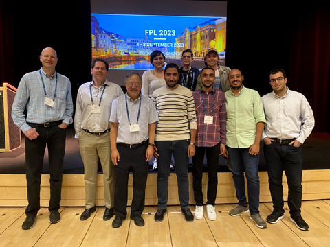
Group photo at FPL - Sep 2023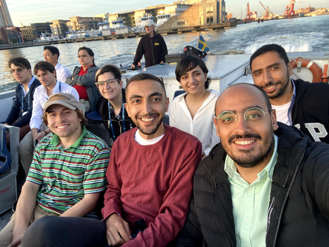
Gothenburg boat tour at FPL - Sep 2023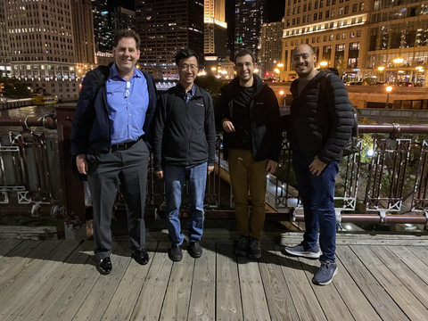
Exploring Chicago with Vaughn, Philip and Mohamed - Oct 2022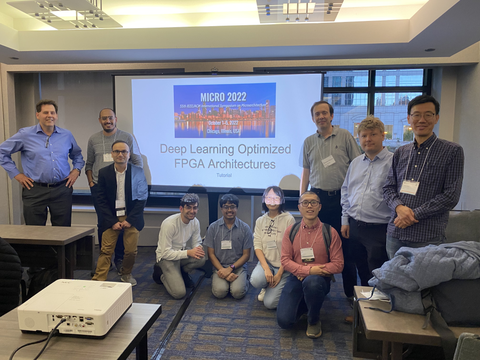
Deep-learning-optimized FPGA architecture tutorial at MICRO - Oct 2022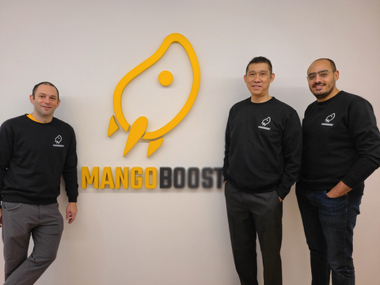
Visiting MangoBoost office in Seoul with Eriko and Gabe - Dec 2022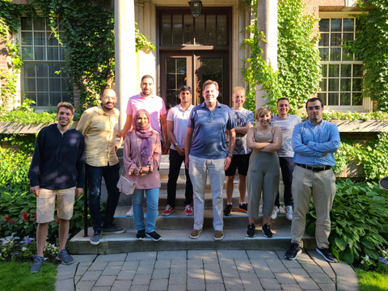
Vaughn's research group lunch at UToronto Faculty Club - 2022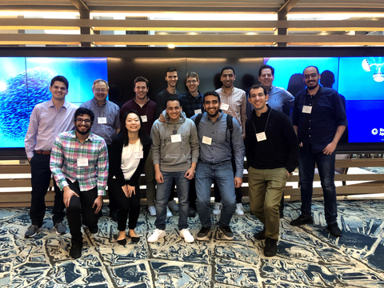
UToronto students, professors, and alumni group photo at ISFPGA - Feb 2019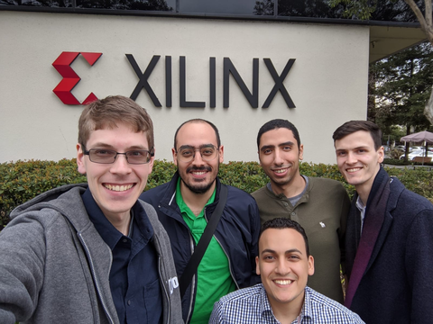
Xilinx visit - Feb 2019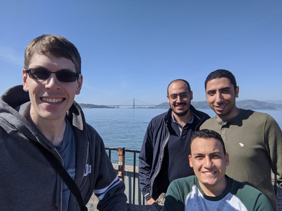
Exploring San Francisco with Sameh, Kevin and Mohamed - Feb 2019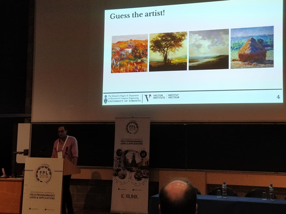
My first conference presentation at FPL - Aug 2018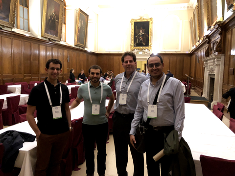
Best paper award ceremony at FPL banquet dinner - Aug 2018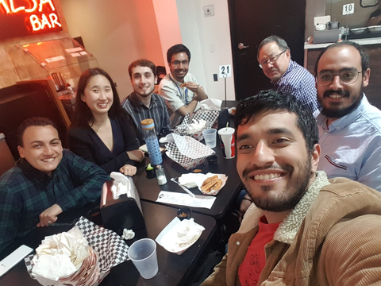
Enjoying Tacos with UToronto folks in San Diego - May 2018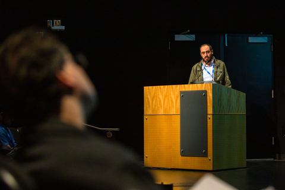
Presenting TensorRAM at FCCM - May 2018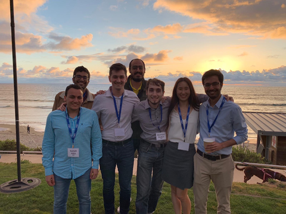
FCCM banquet on the beach - May 2018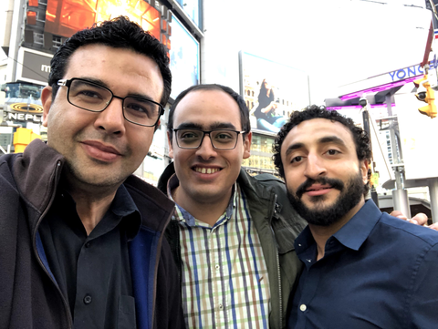
Hosting Egyptian scientist Essam Heggy for a distinguished lecture at UToronto - 2018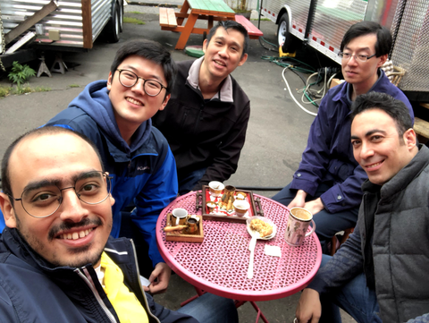
Enjoying Turkish coffee with AAL folks in Portland - 2018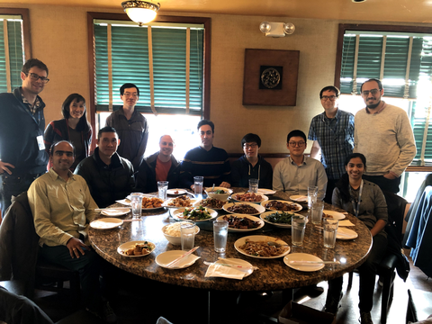
AAL Christmas lunch in Taste of Sichuan, Beaverton - 2018